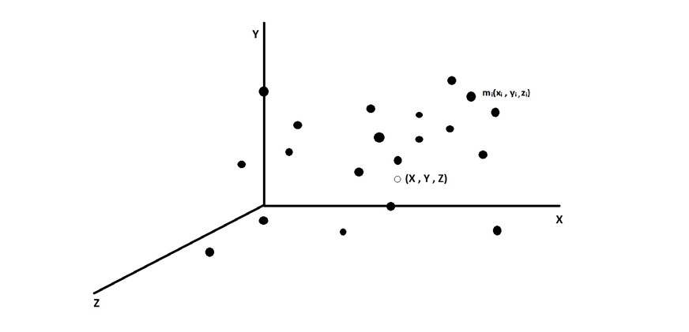

Sometimes you will never know the true value of moment until it becomes memory. So, let’s explore the idea of the moment in terms of mathematics and relate this to reality.
People, who belong to mathematics, statistics, and physics background, are familiar with the term moments but do you ever realize what is moment?
I was doubtful about my thoughts when I just completed my higher secondary studies and was admitted to the Statistics (Hons.) program as an undergraduate student. Professors often talked about the term moment. I was confused about what the term reveal actually. Is there any relation with the term moment which is discussed in Physics?
In this article, I’m going to express my concept and idea about moments using statistical sense as well as the concept of physics. And the end of this article I will try to relate that idea to the moment.
Statistical Notations:
Defining Expectation
Many frequently used random variables can be both characterized and dealt with effectively for the practical purpose by consideration of quantities called their expectation. For example, a gambler might be interested in his average winnings at a game, a businessman in his average profit on a product, a physicist in the average charge of a particle, and so on.
The ‘average’ value of a random phenomenon is termed its mathematical expectation or expected value. There are several senses in which the word “average” is used, but by far the most commonly used is the mean of an r.v., also known as its expected value. In addition, much of statistics is about understanding variability in the world, so it is often important to know how “spread out” the distribution is.
Mathematical Notation:
Given a list of numbers \(x_1, x_2, x_3, \ldots, x_n\), the familiar way to average them is to add them up and divide them by \(n\). This is called the Arithmetic Mean and is defined by
\[ \bar{x} = \dfrac{1}{n}\sum_{j=1}^{n}x_j \tag{1}\]
More generally, we can define a weighted mean of \(x_1, x_2, \ldots, x_n\) as,
\[ \text{Weighted Mean} = \sum_{j=1}^n x_j p_j \tag{2}\]
where the weights \(p_1, p_2, \ldots, p_n\) are pre-specified non-negative numbers that add up to 1 (so the unweighted mean \(\bar{x}\) is obtained when \(p_j = \frac{1}{n}\) for all \(j\).
The definition of a discrete Random Variable is inspired by the weighted mean of a list of numbers, with weights given by probabilities.
Expectation of a discrete R.V. — The expected value (also called the expectation or mean) of a discrete random variable \(X\), whose distinct possible realized values are \(x_1, x_2, \ldots\) is defined by
\[ E(X) = \sum_{j=1}^{\infty} x_j \; P(X = x_j) \tag{3}\]
If the support is finite, then this is replaced by a finite sum. We can also write,
\[ E(X) = \sum_{x} \underbrace{x}_{\text{value}} \; \underbrace{P(X=x)}_{\text{PMF at }x} \tag{4}\]
where the sum is over the support of \(X\) (in any case, \(xP(X=x)\) is \(0\) for any \(x\) not in support). The expectation is undefined if \(\displaystyle \sum_{j=1}^{\infty} |x_j| \; P(X=x_j) = \infty\) , since the series for \(E(X)\) diverges or its value depends on the order in which the \(x_j\) are listed.
In words, the expected value of \(X\) is a weighted average of the possible values that \(X\) can take on, weighted by their probabilities. Let’s check that the definition makes sense using a simple example below.
Let \(X \sim \text{Bern}(p)\) and \(p = 1-q\) then \(E(X) = 1\times p + 0 \times q = p\),
which makes sense intuitively since it is between the two possible values of \(X\), compromising between \(0\) and \(1\) based on how likely each is. This is illustrated in the figure below. For a case with \(p<\frac{1}{2}\) , two pebbles are being balanced on a seesaw. For the seesaw to balance, the fulcrum (shown as a triangle) must be at \(p\), which in physics terms is the center of mass. The frequentist interpretation would be to consider a large number of independent Bernoulli trials, each with probability \(p\) of success. Writing \(1\) for “success” and \(0\) for “failure”, in the long run, we would expect to have data consisting of a list of numbers where the proportion of \(1\)’s is very close to \(p\). The average of a list of \(0\)’s and \(1\)’s is the proportion of \(1\)’s. Note that \(E(X)\) depends only on the distribution of \(X\).
This follows directly from the definition but is worth recording since it is fundamental.
Center of mass of two pebbles, depicting that \(E(X)= p \;\; \text{for} \;\;X \sim \text{Bern}(p)\). Here \(p\) and \(q\) denote the masses of the two pebbles.
Moments:
The moments of a r.v. shed light on its distribution. Everyone is quite familiar that the first two moments are useful since they provide the mean \(E(X)\) and the variance \(V(X) = E \left(X^2\right) - \left[E(X)\right]^2\), which are important summaries of the average value of \(X\) and how to spread out its distribution is. But there is much more to a distribution that its mean and variance. There are third and fourth moments that tell us about asymmetry of distribution and the behavior of the tails or the extreme values.
Moments in statistics are popularly used to describe the characteristic of a distribution. It measures;
\(1^{\text{st}} \; \text{Moment:}\) Measure of location.
\(2^{\text{nd}} \; \text{Moment:}\) Measure of dispersion.
\(3^{\text{rd}} \; \text{Moment:}\) Measure of asymmetry.
\(4^{\text{th}} \; \text{Moment:}\) Measure of peakedness.
The \(1^{\text{st}}\) order central moment which is nothing but the mean of a distribution is called Meathe sure of Central Tendency.
Usual Notation of Center of Mass
Let us consider a collection of \(N\) particles. Let the mass the \(i^{\text{th}}\) particle be \(m_i\) and its coordinates with reference to the chosen axes be \(x_i, y_i, z_i\). The product \(m_ix_i\) for each of the particles and add them to get \(\displaystyle \sum_i m_ix_i\) , similarly, we will get \(\displaystyle \sum_i m_iy_i\) and \(\displaystyle \sum_i m_iz_i\), then
\[ X = \frac{1}{M}\sum_{i}m_ix_i, \; \; Y = \frac{1}{M}\sum_{i}m_iy_i, \; \; Z = \frac{1}{M}\sum_{i}m_iz_i, \tag{5}\]
where \(M = \sum m_i\) is the total mass of the system.

Now, locate the point with coordinates \((X, Y, Z)\). This point is called the center of mass of the given collection of the particles. If the position vector of the \(i^{\text{th}}\) particle is \(\vec{r_i}\), the center of mass is defined to have the position vector
\[ \overrightarrow{R_{cm}} = \frac{1}{M} \sum_{i}m_i \vec{r_i} \tag{6}\]
Taking \(x,y,z\) components of this equation, we get the coordinates of center of mass as defined in equation \((5)\).
Let \(X\) be a random variable with mean \(\mu\) and variance \(\sigma^2\). For any positive integer \(n\), the \(n^{\text{th}}\) moment of \(X\) is \(E(X^n)\) and the central moment is \(E\left[ (X-\mu)\right]^n\). In particular, the mean is the firsfirst-ordertral moment and variance is the second-order central moment. The term moment is borrowed from physics. If you compare with it physics formula mean is specifically centre of mass.
So, let us consider \(X\) to be a r.v. with positive realized values \(x_1, x_2, \ldots, x_n\) and imagine a pebble with mass \(m_j=P(X=x_j)\) positioned at \(x_j\) on a number line, for each \(j\). Therefore,
\[ E(X) = \sum_{j=1}^n m_j \; x_j \;\;\; \text{(Center of Mass of the system)} \tag{7}\]
\[ V(X) = \sum_{j=1}^n m_j \left[ x_j - E(X) \right]^2 \;\;\; \text{(Moment of Inertia about center of mass)} \tag{8}\]
Physics interpretation of moments i.e., the mean (first moment) of an R.V. corresponds to the center of mass of a collection of pebbles, and the variance (second central moment) corresponds to the moment of inertia about the center of mass.
This mathematical formula holds for continuous cases also. Because if summation notation defines discrete case then there might be the continuous case which is true.
Center of Mass for Continuous Bodies
If we consider the body to have a continuous distribution of matter, the summation in the formula of the center of mass should be replaced by integration. So, we don’t talk of the \(i^{\text{th}}\) particle, rather we talk of a small element of the body having a mass \(dm\), we denote the coordinates of the centre of mass as
\[ X = \dfrac{1}{M} \int xdm\ ,\ Y = \dfrac{1}{M}\int ydm\ ,\ Z = \dfrac{1}{M}\int zdm \]
The integration is to be performed under the proper limits so that as the integration variable goes through the limits, the elements cover the entire body.
This is the absolute beauty of moments. Mathematics has a beginning but there is no end. It is just like an expanding universe because both have no boundaries and don’t allow perfection. It is the only place where truth and beauty bring revolution.
References
Introduction to Probability by Jessica Hwang and Joseph K. Blitzstein.
Fundamentals of Mathematical Statistics by S. C. Gupta and V. K. Kapoor.
Concepts of Physics by H. C. Verma.